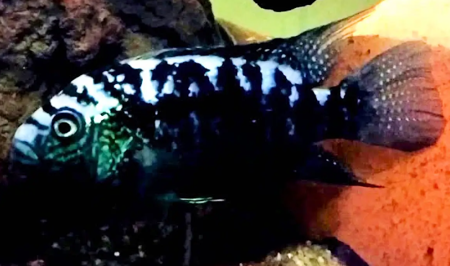

Systématique
- Ordre : Cichliformes
- Famille : Cichlidae
- Genre : Rocio
- Espèce : R. gemmata

Rocio gemmata est un cichlidé d'Amérique centrale décrit scientifiquement en 2007 (Schmitter-Soto). Il est très proche de l'espèce type du genre, R. octofasciata, mais s'en distingue par l'absence de bandes verticales sombres sur les flancs (au profit de taches éparses) et par l'absence de frein (frenum) sur la lèvre inférieure.
C'est un poisson robuste, atteignant environ 10 à 15 cm, soit une taille légèrement inférieure à celle de son cousin. Sa coloration est sombre, parsemée de nombreuses taches irisées bleues, vertes ou dorées ressemblant à des pierres précieuses (d'où le nom d'espèce gemmata).
Cette espèce reste rare dans le commerce aquariophile, souvent éclipsée par la forme "Blue Dempsey" ou l'espèce R. octofasciata classique.
Comme la plupart des membres du genre, c'est un poisson territorial et relativement agressif, bien que certains rapports suggèrent qu'il pourrait être légèrement plus calme que R. octofasciata.
Il aménage son territoire en creusant le substrat. Il est préférable de le maintenir en couple spécifique ou avec d'autres cichlidés robustes d'Amérique centrale dans un volume adapté. La cohabitation avec de petites espèces est impossible (prédation).
Mode : ovipare (pondeur sur substrat découvert).
La reproduction est biparentale. Les œufs sont déposés sur une roche plate préalablement nettoyée. Les deux parents protègent la ponte et les alevins avec vigueur. Les jeunes sont déplacés dans des cuvettes creusées dans le sable jusqu'à la nage libre.
Dimorphisme sexuel : Les mâles sont généralement plus grands, avec des nageoires dorsale et anale plus effilées et pointues. Ils arborent souvent une quantité plus importante de points irisés sur le corps et les opercules que les femelles.
Espérance de vie : Estimée entre 8 et 10 ans en captivité.
Il est endémique de la péninsule du Yucatán au Mexique. Il fréquente les eaux douces, souvent dures et alcalines, des cénotes (gouffres inondés) et des petits lacs, où il trouve refuge parmi les roches et les racines.
Répartition

Origine naturelle :
- Mexique : Péninsule du Yucatán.
- Nord de l'État de Quintana Roo et est du Yucatán.
- Présent dans divers systèmes de cénotes.
Paramètres de maintenance
Température : 24 à 28 °C.
pH : 7,0 à 8,0 (eau basique typique des cénotes).
GH : 10 à 20 °dGH (eau dure).
Courant : Faible à modéré.
Volume conseillé : Minimum 200 à 250 L pour un couple. Un bac plus grand est nécessaire pour une maintenance communautaire avec d'autres espèces.
Régime alimentaire
Régime : omnivore à tendance carnivore.
Dans la nature, il consomme des invertébrés, des insectes et des petits poissons.
En aquarium, il n'est pas difficile et accepte les granulés, les flocons, ainsi que les nourritures congelées ou vivantes (artémias, krill, vers de vase).